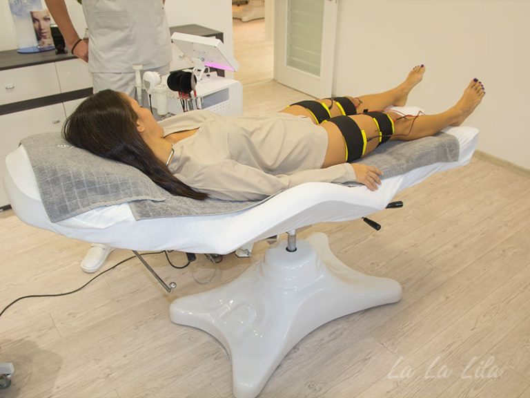

Tretmani tela
Obuhvataju razne vrste procedura koje se sprovode pomoću najsavremenijih aparata. Takvi tretmani podrazumevaju izlaganje delova tela elektrostimulaciji, kavitaciji, vakuumu, ultrazvuku, mezoporaciji i drugim programima radi zatezanja i regeneracije kože, skidanja masnih naslaga i eliminacije celulita, u skladu sa protokolima.
Vakuum tretman deluje na krvne sudove, poboljšava mikrocirkulaciju i ubrzava detoksikaciju organizma, čime dovodi do razgradnje celulita, zatezanja kože, kao i smanjenja spazma u mišićima i bolova koji ih prate.
Programi vakuum tretmana su kompjuterizovani i prilagođeni svakoj regiji ponaosob. Njima se vrši endomasaža odizanjem kože od potkožnog tkiva, čime se pospešuje prokrvljenost kožnih struktura od unutra ka spolja, što snažno poboljšava elastičnost i čvrstoću tretirane regije. Limfnom drenažom dobijamo izbacivanje otrovnih materija. Mikrocirkulacija ubrzava regeneraciju kože, što dovodi do redukcije ožiljaka i strija. Povećava se imunitet i smanjuje mišićna napetost.
Može se koristiti i za razbijanje masnih naslaga, intenzivno zatezanje kože, oslobađanje od celulita ili bolova. Vakuum tretman dovodi do bolje kapilarne cirkulacije, veće snabdevenosti kiseonikom - čime se ubrzava topljenje masnih naslaga - boljeg protoka tečnosti, povećanja metabolizma, povećanja hranjivih materija u tkivu i drenaže štetnih materija, kao i bolje stimulacije imunološkog sistema.
Pre i posle ovog tretmana treba povećati unos vode zbog bolje hidratacije tkiva i lakšeg izbacivanja štetnih materija iz organizma.
Programi vakuum tretmana su kompjuterizovani i prilagođeni svakoj regiji ponaosob. Njima se vrši endomasaža odizanjem kože od potkožnog tkiva, čime se pospešuje prokrvljenost kožnih struktura od unutra ka spolja, što snažno poboljšava elastičnost i čvrstoću tretirane regije. Limfnom drenažom dobijamo izbacivanje otrovnih materija. Mikrocirkulacija ubrzava regeneraciju kože, što dovodi do redukcije ožiljaka i strija. Povećava se imunitet i smanjuje mišićna napetost.
Može se koristiti i za razbijanje masnih naslaga, intenzivno zatezanje kože, oslobađanje od celulita ili bolova. Vakuum tretman dovodi do bolje kapilarne cirkulacije, veće snabdevenosti kiseonikom - čime se ubrzava topljenje masnih naslaga - boljeg protoka tečnosti, povećanja metabolizma, povećanja hranjivih materija u tkivu i drenaže štetnih materija, kao i bolje stimulacije imunološkog sistema.
Pre i posle ovog tretmana treba povećati unos vode zbog bolje hidratacije tkiva i lakšeg izbacivanja štetnih materija iz organizma.
Ultrazvučna kavitacija predstavlja jedan od najsavremenih tretmana namenjenih otklanjanju celulita i lokalizovanih masnih naslaga, koji garantuje redukciju i postepeno uklanjanje celulita, zatezanje kože i topljenje masnih naslaga na kritičnim delovima tela. Ovaj postupak rešava problem celulita bez hirurške intervencije, a rezultati su vidljivi odmah posle prvog tretmana. Ultrazvučna kavitacija je najsličnija mezoterapiji i po tom principu funkcioniše. Za razliku od liposukcije ili zatezanja stomaka, možete se osloboditi celulita i masnih naslaga bez hirurške intervencije, odnosno opšte anestezije.
Postupak podrazumeva tretman ultrazvučnim talasima od 40 Khz kojima se deluje na masne ćelije u potkožnom tkivu. U trenutku kada se u ćelijama nakupi dovoljna energija, njihova membrana puca i masnoće se izlivaju u međućelijski prostor. Time se trajno uništavaju masne ćelije i smanjuje se njihov ukupan broj u tkivu.
Sadržaj masne ćelije putem limfnog sistema odnosi se iz međućelijskog prostora i dalje cirkulacijom dolazi do jetre gde se masti razgrađuju na isti način kao i masnoće unesene ishranom. Neke fragmente razložene masnoće (lipoproteini) potrebno je potrošiti i putem fizičke aktivnosti i na taj način ih ukloniti iz cirkulacije. Tretman je potpuno bezbolan i kombinuje se sa vakuum terapijom koja pospešuje limfnu drenažu, odnosno odnesu sadržaj koji se izlio u međućelijski prostor,
Postupak podrazumeva tretman ultrazvučnim talasima od 40 Khz kojima se deluje na masne ćelije u potkožnom tkivu. U trenutku kada se u ćelijama nakupi dovoljna energija, njihova membrana puca i masnoće se izlivaju u međućelijski prostor. Time se trajno uništavaju masne ćelije i smanjuje se njihov ukupan broj u tkivu.
Sadržaj masne ćelije putem limfnog sistema odnosi se iz međućelijskog prostora i dalje cirkulacijom dolazi do jetre gde se masti razgrađuju na isti način kao i masnoće unesene ishranom. Neke fragmente razložene masnoće (lipoproteini) potrebno je potrošiti i putem fizičke aktivnosti i na taj način ih ukloniti iz cirkulacije. Tretman je potpuno bezbolan i kombinuje se sa vakuum terapijom koja pospešuje limfnu drenažu, odnosno odnesu sadržaj koji se izlio u međućelijski prostor,
Elektrostimulacija je savremeni tretman kojim se ubrzava mršavljenje, redukuje celulit i vrši oblikovanje tela. Dejstvom specifičnih struja mišići se podstiču na rad, čime se povećava potrošnja masnoća i ugljenih hidrata, pojačava cirkulacija i detoksikacija, oblikuju mišići i poboljšava tonus tela. Električni impulsi, koji nisu neprijatni, dejstvom na mišiće dovode do “pasivne gimnastike”.
Energiju za kontrakcije mišići crpe iz sopstvenog glikogena i okolnih masnih naslaga, tako da se primenom elektrostimulacije može postići smanjenje obima delova tela za dva-tri centimetra (struk, bokovi, natkolenice itd). Primenom neofaradske struje postiže se poboljšanje cirkulacije, ubrzavanje metabolizma, oksigenacija tkiva i eliminacija viška vanćelijske tečnosti. Istovremeno se jača mišićna struktura, daje im se čvrstoća i podiže tonus, a figuri se vraća vitkost. Poboljšana ukupna cirkulacija i periferna mikrocirkulacija dovodi do obnavljanja dubinskih i površinskih slojeva tkiva, a koža se revitalizuje, zateže i podmlađuje. Elektrostimulacija mišića ima sledeće efekte:
- razgrađuje masno tkivo i celulit;
- povećava tonus mišića (mišići će biti zategnuti kao posle vežbi);
- brzo zateže telo i mišiće;
- podstiče perifernu mikrocirkulaciju;
- uklanja celulit i efekat pomorandžine kore.
Presoterapija (limfna drenaža) predstavlja aparaturnu tehniku limfne drenaže kojom se ubrzava protok limfe i krvi i povećava elastičnost i izgled kože.
To je metoda kojom se stimuliše protok limfe ka venskoj cirkulaciji, odakle se potiskuje ka srcu, čime se vrši detoksikacija organizma i otečenim ekstremitetima se vraća realan obim. Razlikuje se od ostalih vrsta masaža po tome što se koristi drugačija tehnika – lagani pritisak na limfne čvorove. Za vreme postupka nema nikakvih neželjenih ili neprijatnih efekata. Izuzetno јe prijatana i relaksirajuća. Ovaj tretman podstiče razgradnju celulita, smanjenje obima, prokrvljenost tkiva i otklanjanje edema. Presoterapijom se postiže ravnoteža tečnosti u organizmu i bolje opšte stanje organizma jer limfa - koja se sastoji od plazme, belih krvnih zrnaca (limfociti) i nešto crvenih krvnih zrnaca, tj. njeni limfociti vežu za sebe strane ili kancerogene materije i izbacuju ih iz tela.
Tretmani traju od 30 do 60 minuta, prema dogovoru i preporučenoj seriji. Rade se svakodnevno i uglavnom u seriji od 10 tretmana.
Presoterapiju, odnosno limfnu drenažu obavezno preporučujemo našim klijentima koji dolaze na tretmane oblikovanja tela i žele da postignu još bolje rezultate. Limfna drenaža višestruko pozitivno deluje na organizam jer prenosi hranjive supstance i kiseonik iz krvi do svake ćelije, a na povratku sakuplja štetne materije i vraća se u krvotok pa se stoga preporučuje i posle hirurških zahvata jer ublažava bol, dugotrajne ožiljke, zadebljanja kože i podiže imunitet u tretiranom delu tela.
To je metoda kojom se stimuliše protok limfe ka venskoj cirkulaciji, odakle se potiskuje ka srcu, čime se vrši detoksikacija organizma i otečenim ekstremitetima se vraća realan obim. Razlikuje se od ostalih vrsta masaža po tome što se koristi drugačija tehnika – lagani pritisak na limfne čvorove. Za vreme postupka nema nikakvih neželjenih ili neprijatnih efekata. Izuzetno јe prijatana i relaksirajuća. Ovaj tretman podstiče razgradnju celulita, smanjenje obima, prokrvljenost tkiva i otklanjanje edema. Presoterapijom se postiže ravnoteža tečnosti u organizmu i bolje opšte stanje organizma jer limfa - koja se sastoji od plazme, belih krvnih zrnaca (limfociti) i nešto crvenih krvnih zrnaca, tj. njeni limfociti vežu za sebe strane ili kancerogene materije i izbacuju ih iz tela.
Tretmani traju od 30 do 60 minuta, prema dogovoru i preporučenoj seriji. Rade se svakodnevno i uglavnom u seriji od 10 tretmana.
Presoterapiju, odnosno limfnu drenažu obavezno preporučujemo našim klijentima koji dolaze na tretmane oblikovanja tela i žele da postignu još bolje rezultate. Limfna drenaža višestruko pozitivno deluje na organizam jer prenosi hranjive supstance i kiseonik iz krvi do svake ćelije, a na povratku sakuplja štetne materije i vraća se u krvotok pa se stoga preporučuje i posle hirurških zahvata jer ublažava bol, dugotrajne ožiljke, zadebljanja kože i podiže imunitet u tretiranom delu tela.
